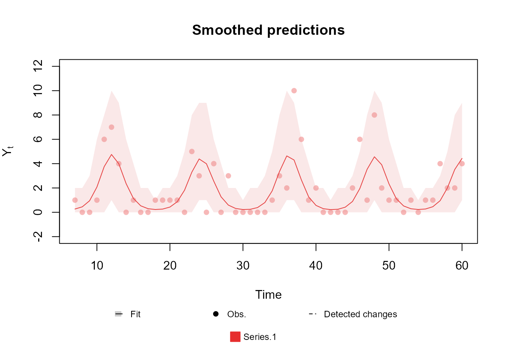
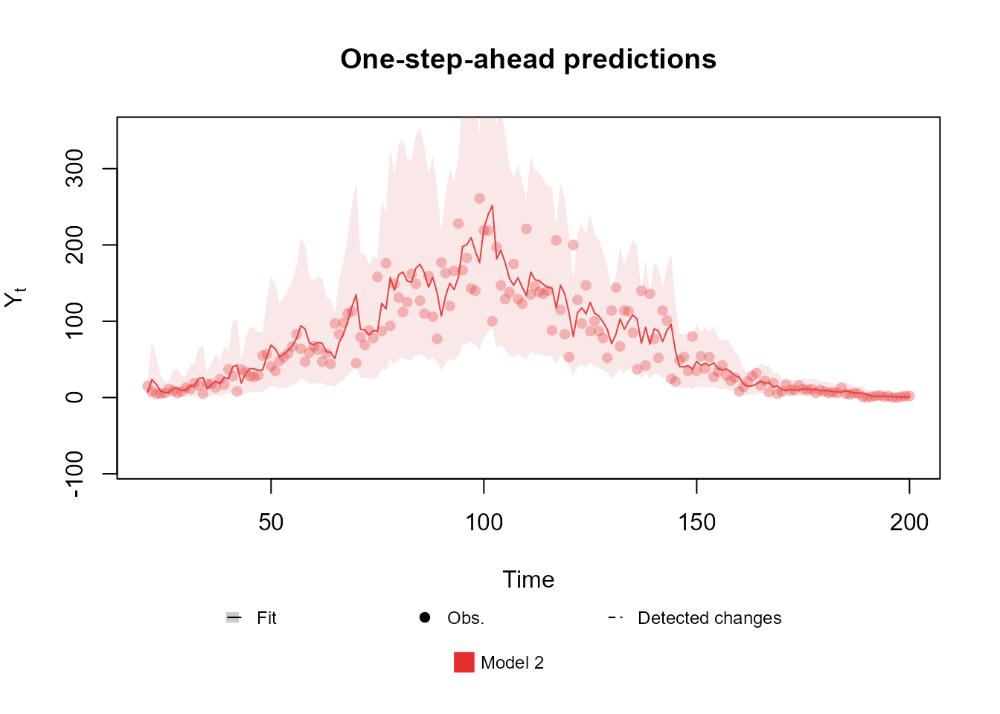

In this vignette we will discuss the specification of the model structure. We will consider the structure of a model as all the elements that determine the relation between our linear predictor \(\lambda_t\) and our latent states \(\theta_t\) though time, i.e., we want the define the following, highlighted equations from the model:
\[ \require{color} \begin{align} Y_t|\eta_t &\sim \mathcal{F}\left(\eta_t\right),\\ g(\eta_t) &= {\color{red}\lambda_{t}=F_t'\theta_t,}\\ {\color{red}\theta_t }&{\color{red}=G_t\theta_{t-1}+\omega_t,}\\ {\color{red}\omega_t }&{\color{red}\sim \mathcal{N}_n(h_t,W_t)}. \end{align} \]
Namely, we consider that the structure of a model consists of the matrices \(F_t\), \(G_t\), \(h_t\), \(H_t\) and \(D_t\).
Although we allow the user to manually define each entry of each of
those matrices (which we do not recommend), we also
offer tools to simplify this task. Let us start by presenting the basis
function for all structural blocks, the polynomial_block
function.
A structure for polynomial trend models
polynomial_block(
...,
order = 1,
name = "Var.Poly",
D = 1,
h = 0,
H = 0,
a1 = 0,
R1 = c(9, rep(1, order - 1)),
monitoring = c(TRUE, rep(FALSE, order - 1))
)This function will create a structural block based on West and Harrison (1997), chapter 7, i.e., it creates a latent vector \(\theta_t=(\theta_{1,t},...,\theta_{k,t})'\), where \(k\) is the order of the polynomial block, such that:
\[ \begin{align} \theta_{i,t} &= \theta_{i,t-1}+\theta_{i+1, t-1}+\omega_{i,t}, i=1,...,k-1\\ \theta_{k,t} &= \theta_{k,t-1}+\omega_{k,t},\\ \theta_1&\sim \mathcal{N}_k(a_1,R_1),\\ \omega_{1,t},...,\omega_{k,t}&\sim \mathcal{N}_k(h_t,W_t), \end{align} \] where \(W_t=Var[\theta_t|\mathcal{D}_{t-1}]\odot (1-D_t) \oslash D_t+H_t\).
Notice that the user does not need to specify the matrix \(G_t\), since it is implicitly determined by the equations above and the order of the polynomial block. Each type of block will define it own matrix \(G_t\), as such, the user does not need to worry about \(G_t\), except in very specific circumstances, where one need a type of model that is not yet implemented in the package.
It is easy to see the correspondence between most of the arguments of
the polynomial_block function and their respective meaning
in the block specification, remaining only to explain the use of the
..., name and monitoring
arguments. We do advise all users to consult the associated
documentation for more details (see help(polynomial_block)
or the reference manual).
The argument ... is used to specify the matrix \(F_t\), specifically, the user must provide
a list of named values, whose name indicate a linear predictor \(\lambda_t\) and its associated value
represents the effect of \(\theta_{1,t}\) in this predictor (the other
latent states are assumed to have no effect on the linear predictors).
Naturally, if a linear predictor is not present in ..., it
is understood that \(\theta_{1,t}\)
have no effect whatsoever on that particular linear predictor. Such
specification of \(F_t\) may seem
strange, but as the reader will see further bellow, this way of
specifying \(F_t\) is very useful to
avoid confusion when dealing with multiple linear predictors.
It is important to emphasize that the dimesion of \(\theta_t\) is implicitly determined by the
block structure, besides, \(\lambda_t\)
is implicitly determined by ..., since one linear predictor
will be created for each unique named value passed by
the user.
The argument name is optional and it is used to help the
user to identify each latent state after fitting the model,
specifically, each latent state will be called by its own name when
plotting or printing \(\theta_t\).
Lastly, the monitoring shall be explained latter, in the
section about monitoring and intervation.
Notice that the default values of each argument leads to a first order polynomial block with no temporal dynamic, besides, the default prior is such that \(\theta_{1,1} \sim \mathcal{N}(0,9)\) and \(\theta_{i,1} \sim \mathcal{N}(0,1), i=2,...,k\).
To exemplify the usage of this function, let us assume that we have a simple Normal model with known variance \(\sigma^2\), in which \(\eta\) is the mean parameter and the link function \(g\) is such that \(g(\eta)=\eta\). Let us also assume that the mean is constant over time and we have no explanatory variables, such that our model can be written simple as:
\[ \begin{align} Y_t|\theta_t &\sim \mathcal{N}_1\left(\eta_t, \sigma^2\right),\\ \eta_t &=\lambda_{t}=\theta_t,\\ \theta_t&=\theta_{t-1}=\theta. \end{align} \]
In this case, we have that \(F_t=1\), \(G_t=1\), \(D_t=1\), \(h_t=0\) and \(H_t=0\), for all \(t\). Assuming a prior distribution \(\mathcal{N}(0,9)\) for \(\theta\), we can create such structure using the following code:
mean_block <- polynomial_block(
eta = 1,
order = 1,
name = "Mean",
)By setting eta=1, we specify that there is a linear
predictor called eta, and that \(eta
= 1 \times \theta\). By setting order = 1, we
specify that \(\theta_t\) is a scalar
and that \(G_t=1\). We can omit the
values of a1 , R1, D,
h and H, since the default values are equal to
the desired. We could also omit the argument order, since
the default is already \(1\), but we
chose to explicit define it so as to emphasize its usage.
Suppose now that we have a explanatory variable \(X\) that we would like to introduce in our model to help explain the behavior of \(\eta_t\). We could similarly define such structure by creating an additional block such as:
polynomial_block(
eta = X,
name = "Var X"
)By setting eta=X, we specify that there is a linear
predictor called eta, and that \(eta
= X \times \theta\). If \(X=(X_1,...,X_T)'\) is a vector, then we
would have \(F_t=X_t\), for each \(t\), such that \(\eta_t = X_t \times \theta_t\).
It is worth noting that there is a specific structural block designed
for regressions, called regression_block, but we also allow
any structural block to be used as a regression, allowing the user to
specify complex temporal dynamics for the effects of any covariate.
Until now, we only discussed the creation of static models, but the
inclusion of temporal dynamic is very straightforward, one must simply
specify the values of H to be greater than \(0\) and/or the values of D to
be lesser than \(1\):
mean_block <- polynomial_block(
eta = 1,
order = 1,
name = "Mean",
D = 0.95
)Bellow we present a plot of two models fitted to the same data: one with a static mean and another using a dynamic mean.

The detailed theory behind the structure discussed in this section can be found in chapters 6, 7 and 9 from West and Harrison (1997).
A structure for dynamic regression models
regression_block(
...,
max.lag = 0,
zero.fill = TRUE,
name = "Var.Reg",
D = 1,
h = 0,
H = 0,
a1 = 0,
R1 = 9,
monitoring = rep(FALSE, max.lag + 1)
)The regression_block function creates a structural block
for a dynamic regression with covariate \(X_t\), as specified in West and Harrison (1997), chapter 9. When
max.lag is equal to \(0\),
this function can be see as a wrapper for the
polynomial_block function with order equal to \(1\). When max.lag is greater
or equal to \(1\), the
regression_block function is equivalent to the
superposition of several polynomial_block functions with
order equal to \(1\). Specifically, if
the linear predictor \(\lambda_t\) is
associated with this block, we can describe its structure with the
following equations:
\[ \begin{align} \lambda_t&=\sum_{i=0}^{max.lag}X_{t-i}\theta_{i,t},\\ \theta_{i,t}&=\theta_{i,t-1}+\omega_{i,t},\quad \forall i,\\ \omega_{0,t},...,\omega_{max.lag,t}&\sim \mathcal{N}_{max.lag+1}(0,W_t),\\ \theta_{0,1},..., \theta_{max.lag,1}&\sim \mathcal{N}_{max.lag+1}(a_1,R_1), \end{align} \] where \(W_t=Var[\theta_t|\mathcal{D}_{t-1}]\odot (1-D_t) \oslash D_t+H_t\).
The usage of the regression_block function is quite
similar to that of the polynomial_block function, the only
differences being in the max.lag and zero.fill
arguments. The max.lag defines the maximum lag of the
variable \(X_t\) that has effect on the
linear predictor. For example, if we define max.lag as
\(3\), we would be defining that \(X_t\), \(X_{t-1}\), \(X_{t-2}\) and \(X_{t-3}\) all have an effect on \(\lambda_t\), such that \(max.lag+1\) latent variables are created,
each one representing the effect of a lagged value of \(X_t\).
Lastly, the zero.fill argument defines if the package
should take the value of \(X_t\) to be
\(0\) when \(t\) is non-positive, i.e., if
TRUE (default), the package considers \(X_t=0\), for \(t=0,-1,...,-max.lag+1\). If
zero.fill is FALSE, then the user must provide
the values of \(X_t\) as a vector of
size \(T+max.lag\) (instead of \(T\)), where \(T\) is the length of the time series that
is being modeled, and the first \(max.lag\) values of that vector will be
taken as \(X_{-max.lag+1},...,X_0\).
The usage of the remaining arguments is identical to that of the
polynomial_block function, and can also be inferred by the
previous equation. As such, we will only emphasize the usage of the
... argument.
The argument ... is used to specify the matrix \(F_t\), specifically, the user must provide
a list of named values, whose name indicate a linear predictor \(\lambda_t\). The effect of \(X_t\) in this predictor is represented by
\(\theta_{0,t},...,\theta_{max.lag,t}\), such
that \(\theta_{i,t}\) represents the
effect of \(X_{t-i}\) in \(\lambda_t\) (i.e., the lagged effect of
order \(i\)). It is easy to see that,
if \(X_t=x\), for all \(t\) (in other words, if \(X_t\) is constant), one should
not use \(max.lag\) greater
then \(0\) . Naturally, if a linear
predictor is not present in ..., it is understood that
\(X_t\) has no effect whatsoever on
that particular linear predictor. Such specification of \(F_t\) may seem strange, but as the reader
will see further bellow, this way of specifying \(F_t\) is very useful to avoid confusion
when dealing with multiple linear predictors.
Here we present the code for fitting the following model:
\[ \begin{align} Y_t|\theta_t &\sim Poisson\left(\eta_t\right),\\ \ln(\eta_t) &=\lambda_{t}=X_t\theta_t,\\ \theta_t&=\theta_{t-1}+\omega_t,\\ \omega_t &\sim \mathcal{N}_1(0,W_t), \end{align} \] where \(X_t\) is a known covariate and \(W_t\) is specified using a discount factor of \(0.95\).
regression <- regression_block(The_name_of_the_linear_predictor = X, D = 0.95)
outcome <- Poisson(lambda = "The_name_of_the_linear_predictor", data = data)
fitted.data <- fit_model(regression, outcome)
The detailed theory behind the structure discussed in this section can be found in chapters 6 and 9 from West and Harrison (1997).
A structure for harmonic trend models
harmonic_block(
...,
period,
order = 1,
name = "Var.Sazo",
D = 1,
h = 0,
H = 0,
a1 = 0,
R1 = 4,
monitoring = rep(FALSE, order * 2)
)This function will creates a structural block based on West and Harrison (1997), chapter 8, i.e., it creates a latent vector \(\theta_t=(\theta_{1,t},\theta_{2,t},...,\theta_{2\times order-1,t},\theta_{2\times order,t})'\), so that:
\[ \begin{bmatrix}\theta_{2i -1,t}\\ \theta_{2i,t}\end{bmatrix} = \begin{bmatrix}cos(iw) & sin(iw)\\ -sin(iw) & cos(iw)\end{bmatrix}\begin{bmatrix}\theta_{2i -1,t-1}\\ \theta_{2i,t-1}\end{bmatrix}+\begin{bmatrix}\omega_{2i -1,t}\\ \omega_{2i,t}\end{bmatrix}, i=1,...,order\\ \begin{align} \theta_{1,1},...,\theta_{2 \times order,1}&\sim \mathcal{N}_{2\times order}(a_1,R_1),\\ \omega_{1,t},...,\omega_{2 \times order,t}&\sim \mathcal{N}_{2\times order}(0,W_t),\\ \end{align} \] where \(W_t=Var[\theta_t|\mathcal{D}_{t-1}]\odot (1-D_t) \oslash D_t+H_t\) and \(w=\frac{2\pi}{period}\).
Notice that the user does not need to specify the matrix \(G_t\), since it is implicitly determined by
the order and the period of the harmonic block, being a block diagonal
matrix where each block is a rotation matrix for an angle multiple of
\(w\), such that, if
period is an integer, \(G_t^{period}=I\). Notice that, when
period is an integer, it represents the length of the
seasonal cycle. For instance, if we have a time series with monthly
observations and we believe this series to have an annual pattern, then
we would set the period for the harmonic block to be equal
to 12 (the number of observations until the cycle “resets”). For details
about the order of the harmonic block and the representation of seasonal
patterns with Fourier Series, see West and
Harrison (1997), chapter 8.
Similar to the polynomial_block function, the argument
... is used to specify the matrix \(F_t\). The user must provide a list of
named values whose name indicate a linear predictor \(\lambda_t\) and its associated value
represent the effect of \(\theta_{it}\), for odd \(i\), in this predictor (the other latent
states are assumed to have no effect on the linear predictors).
Naturally, if a linear predictor is not present in ..., it
is understood that this block has no effect whatsoever on that
particular linear predictor.
The natural usage of this block is for specifying harmonic trends for
the model, but it can also be used for explanatory variables with
seasonal effect on the linear predictor, for that, see the usage of the
regression_block and polynomial_block
functions.
Here we present a simply usage example for a harmonic block with period \(12\):
mean_block <- harmonic_block(
eta = 1,
period = 12,
D = 0.975
)Bellow we present a plot of a Poisson model with such structure:

The detailed theory behind the structure discussed in this section can be found in chapters 6, 8 and 9 from West and Harrison (1997).
A structure for autoregresive models
AR_block(
...,
order,
noise.var = NULL,
noise.disc = NULL,
pulse = 0,
name = "Var.AR",
AR.support = "free",
a1 = 0,
R1 = 9,
h = 0,
monitoring = TRUE,
D.coef = 1,
h.coef = 0,
H.coef = 0,
a1.coef = c(1, rep(0, order - 1)),
R1.coef = c(1, rep(0.25, order - 1)),
monitoring.coef = rep(FALSE, order),
a1.pulse = 0,
R1.pulse = 9,
D.pulse = 1,
h.pulse = 0,
H.pulse = 0,
monitoring.pulse = NA
)This function creates a structural block based on West and Harrison (1997), chapter 9, i.e., it creates a latent state vector \(\theta_t\), an autoregressive (AR) coefficient vector \(\phi_t=(\phi_{1,t},...,\phi_{order, t})'\) and a pulse coefficient vector \(\rho_t=(\rho_{1,t},...,\rho_{l,t})'\), where \(l\) is the number of pulses (discussed later on) so that:
\[ \begin{align} \theta_{t} &= \sum_{i=1}^{k}\phi_{i,t}\theta_{t-i}+\sum_{i=1}^{l}\rho_{i,t}X_{i,t}+\omega_{t},\\ \phi_{i,t}&=\phi_{i,t-1}+\omega^{\text{coef}}_{i,t},\\ \rho_{i,t}&=\rho_{i,t-1}+\omega_{i,t}^{pulse},\\ \omega_{t}&\sim \mathcal{N}_1(h_t,W_t),\\ \omega_{t}^{\text{coef}}&\sim \mathcal{N}_k(h_t^{\text{coef}},W_t^{\text{coef}}),\\ \omega_{t}^{pulse}&\sim \mathcal{N}_l(h_t^{pulse},W_t^{pulse}),\\ \theta_1&\sim \mathcal{N}(a_1,R_1),\\ \phi_1&\sim \mathcal{N}_k(a_1^{\text{coef}},R_1^{\text{coef}}),\\ \rho_1&\sim \mathcal{N}_l(a_1^{pulse},R_1^{pulse}). \end{align} \] where:
\[ \begin{align} W_t&=noise.var&+&\frac{(1-noise.disc)}{noise.disc}Var[\theta_t|\mathcal{D}_{t-1}] & & & & ,\\ W_t^{\text{coef}}&=H_t^{\text{coef}}&+&Var[\phi_t|\mathcal{D}_{t-1}] &\odot& (1-D_t^{\text{coef}}) &\oslash& D_t^{\text{coef}},\\ W^{pulse}_t&=H_t^{pulse}&+&Var[\rho_t|\mathcal{D}_{t-1}] &\odot&(1-D_t^{pulse}) &\oslash&D_t^{pulse}, \end{align} \] and \(X\), called pulse matrix, is a known \(T \times l\) matrix.
Notice that the user does not need to specify the matrix \(G_t\), since it is implicitly determined by the order of the AR block and the equations above, although, as the reader might have noticed, that evolution will always be non-linear. Since the method used to fit models in this package requires a linear evolution, we use the approach described in West and Harrison (1997), chapter 13, to linearize the previous evolution equation. For more details about the usage of autoregressive models in the context of DLM’s, see West and Harrison (1997), chapter 9.
It is easy to understand the meaning of most arguments of the
AR_block function based on the previous equations, but some
explanation is still needed for the ..., name
and AR.support arguments, plus the arguments related with
the so called pulse. We do advise all users to consult the
associated documentation for more details (see
help(AR_block) or the reference manual).
Similar to the polynomial_block function, the argument
... is used to specify the matrix \(F_t\). The user must provide a list of
named values, whose name indicate a linear predictor \(\lambda_t\) and its associated value
represents the effect of \(\theta_{t}\)
in this predictor (we assume that \(\phi_t\) and \(\rho_t\) have no effect on the linear
predictors). Naturally, if a linear predictor is not present in
..., it is understood that \(\theta_{t}\) has no effect whatsoever on
that particular linear predictor.
Also, in the same fashion as the other structure functions, the
name argument is optional, providing an easy way to
identify each latent variable when plotting and summarizing a fitted
model.
The AR.support is a character string, either
"constrained" or "free". If
AR.support is "constrained", then the AR
coefficients \(\phi_t\) will be forced
to be on the interval \((-1,1)\),
otherwise, the coefficients will be unrestricted. Beware that, under no
restriction on the coefficients, there is no guarantee that the
estimated coefficients will imply in a stationary process, furthermore,
if the order of the AR block is greater than 1, then the restriction
imposed when AR.support is equal to
"constrained" does NOT guarantee that the
process will be stationary, as such, the user is not allowed to use
constrained parameters when the order of the block is greater than \(1\). To constrain \(\phi_t\) to the interval \((-1,1)\), we apply the inverse Fisher
transformation, also known as the hyperbolic tangent function.
The pulse matrix \(X\) is informed
through the argument pulse, with the dimension of \(\rho_t\) being implied by the number of
columns in \(X\). It is important to
notice that the package expects that \(X\) will inform the pulse value for each
time instance, interpreting each column as a distinct pulse with an
associated coordinate of \(\rho_t\).
Finally, we can summarize the usage of the AR_block
function as follows:
-
a1,R1are the parameter for the prior for the AR coefficient \((\theta_1,...,\theta_{1-order})'\); -
noise.var,noise.discandhdefine the mean and variance of random fluctuations of \(\theta_t\) through time; -
a1.coef,R1.coefare the parameter for the prior for the coefficients \(\phi_1, ...,\phi_{order}\); -
h.coef,H.coefandD.coefdefine the mean and variance of random fluctuations of \(\phi_t\) through time; -
a1.pulse,R1.pulseare the parameter for the prior for the pulse coefficient \(\rho_1\); -
h.pulse,H.pulseandD.pulsedefine the mean and variance of random fluctuations of \(\rho_t\) through time; -
pulseis the pulse matrix \(X\); -
AR.supportdefines the support for the AR coefficients \(\phi_t\).
Bellow we present the code for a simply \(AR(1)\) block with \(W_t=0.1, \forall t\):
mean_block <- AR_block(
eta = 1,
order = 1,
noise.var = 0.1
)Finally we present a plot of a Gamma model with known shape \(\alpha=1.5\) and a AR structure for the mean fitted with simulated data. We will refrain to show the code for fitting the model itself, since we will discuss the tools for fitting in a section of its own.

Some comments about autoregressive models in the Normal family
The user may have notice that the autoregressive block described above is a little different from what is most common in the literature. Specifically, we do not assume that the observed data itself (\(Y_t\)) follows an autoregressive evolution, but instead \(\theta_t\) does. This approach is a generalization of the usual autoregressive model, indeed, if we have that \(Y_t\) follows an usual AR(k), such that:
\[ \begin{align} Y_t&=\sum_{i=1}^{k}\phi_{i,t}Y_{t-1}+\epsilon_t,\\ \epsilon_t &\sim \mathcal{N}_1(0,\sigma_t^2), \end{align} \] then, this model can also be written as:
\[
\begin{align}
Y_t|\eta_t&\sim \mathcal{N}_1(\eta_t,0),\\
\eta_t=\theta_t&=\sum_{i=1}^{k}\phi_{i,t}\theta_{t-i}+\omega_t,\\
\omega_t &\sim \mathcal{N}_1(0,W_t),
\end{align}
\] such that this model can be described using the
AR_block function.
More generally, if we have that \(Y_t|\eta_t \sim \mathcal{F}(\eta_t)\), where \(\mathcal{F}\) is a distribution family contained in the exponential family and indexed by \(\eta_t\), then we have that:
\[ \begin{align} Y_t|\eta_t &\sim \mathcal{F}(\eta_t),\\ g(\eta_t)=\theta_t&=\sum_{i=1}^{k}\phi_{i,t}\theta_{t-i}+\omega_t,\\ \omega_t &\sim \mathcal{N}_1(0,W_t). \end{align} \]
It is important to note that there is some caveats about the first
specification (the usual one) and the more general one presented above.
As the reader will see further bellow, we offer, as a particular case,
the Normal distribution with both unknown mean and observational
variance, where we can specify predictive strucutre for
both the mean and the observational variance. In this
model, it does matter if the evolution error is associated with the
observation equation or the evolution equation (we cannot specify
predictive structure for former, but to the latter we can). For such
cases, we recommend the use of the regression_block
function instead of the AR_block.
Here we present an example of the specification of an AR(k) using the
regression_block function for a time series \(Y_t\) of length \(T\):
regression_block(
mu = c(0, Y[-T]),
max.lag = k
)In the Advanced Examples section we will provide a wide range of examples, including ones with the aforementioned structures. In particular, we will present the code for some usual (yet different from what we discussed) forms of AR, including the following model:
\[ \begin{align} Y_t&=\mu_t+\sum_{i=1}^{k}\phi_{i,t}(Y_{t-1}-\mu_{t-1})+\epsilon_t,\\ \epsilon_t &\sim \mathcal{N}_1(0,\sigma_t^2), \end{align} \]
A structure for overdispersed models
noise_block(..., name = "Noise", D = 0.99, R1 = 1)This function will creates a sequence of independent latent variables \(\epsilon_1,...,\epsilon_t\) such that:
\[ \begin{align} \epsilon_{t} &\sim \mathcal{N}(0,\sigma_t^2),\\ \sigma_t^2&=\frac{t-1}{t}D_t\sigma_{t-1}^2+\frac{1}{t}(1-D_t)\mathbb{E}[\epsilon_{t-1}^2|\mathcal{D}_{t-1}],\\ \sigma_1^2&=R_1. \end{align} \]
Notice that the user do not need to specify the matrix \(G_t\), since it is implicitly determined by the equations above, such that \(G_t=0\) for all \(t\).
It is easy to see the correspondence between most of the arguments of
the noise_block function and their respective meaning in
the block specification, while the remaining ones follow the same usage
seen in the previous block functions (see the
polynomial_block function). Here we will only emphasize the
usage of the ... argument.
The argument ... is used to specify the matrix \(F_t\), specifically, the user must provide
a list of named values, whose name indicate a linear predictor \(\lambda_t\) and its associated value
represent the effect of \(\epsilon_{t}\) in this predictor.
Naturally, if a linear predictor is not present in ..., it
is understood that \(\epsilon_{t}\)
have no effect whatsoever on that particular linear predictor. Such
specification of \(F_t\) may seem
strange, but as the reader will see further bellow, this way of
specifying \(F_t\) is very useful to
avoid confusion when dealing with multiple linear predictors.
It is important to emphasize that the dimension of \(\lambda_t\) is implicitly determined by
..., since one linear predictor will be created for each
unique named value passed by the user.
As the user must have noticed, this block makes no sense on its own, since it has barely any capability of learning patterns. But, we is shown in the next subsection, structural blocks can be combined with each other, such that the noise block would be only one of several other structural blocks in a model.
To exemplify the utility of this structural block, let us assume we want to model the following (simulated) time series of counts:

Since the data is a counting, its natural to propose a Poisson model, such that:
\[ \begin{align} Y_t|\theta_t &\sim Poisson\left(\eta_t\right),\\ \ln(\eta_t) &=\lambda_{t}=\theta_t,\\ \theta_t&=\theta_{t-1}+\omega_t,\\ \omega_t &\sim \mathcal{N}_1(0,W_t), \end{align} \]
Bellow we present that model fitted using the kDGLM
package:
level <- polynomial_block(
rate = 1,
order = 3,
D = 0.95
)
fitted.data <- fit_model(level,
"Model 1" = Poisson(lambda = "rate", data = data)
)
plot(fitted.data, lag = 1, plot.pkg = "base")
Notice that the data at the middle of the observed period is overdispersed, such that a Poisson model cannot properly address the uncertainty. One could proposed the usage of a Normal model which, indeed, could capture the uncertainty in the middle, but notice that the data at the beginning and at the end of the series has very low values, such that a Normal model would be inappropriate. In such scenario, a better approach would be to add an noise component to the linear predictor, such that it can capture the overdispersion:
level <- polynomial_block(
mu = 1,
order = 3,
D = 0.95
)
noise <- noise_block(
mu = 1
)
fitted.data <- fit_model(level, noise,
"Model 2" = Poisson(lambda = "mu", data = data)
)
plot(fitted.data, lag = 1, plot.pkg = "base")
It is relevant to point out that the choice of R1 can
affect the final fit, as such, we highly recommend the user to perform a
sensibility analysis to help specify the value of R1.
Lastly, as we will see latter on, the noise block can also be useful to model the dependency between multiple time series.
Handling multiple structural blocks
In the previous subsections, we discussed how to define the structure
of a model using the functions polynomial_block,
regression_block, harmonic_block,
AR_block and noise_block, yet we have dealt
mostly with cases where a model had only one of those structures.
Generally, the user will want to mix and match multiple types of
structures, each one being responsible to explain part of the outcome
\(Y_t\) (as seen in the case of the
noise_block function). For this task, we introduce two
operator: one to combine (superposition) and other to multiple
blocks.
Suppose that we have a model with a variety of structural blocks such that:
\[ \begin{align} \theta_t&=\begin{bmatrix}\theta_t^1\\ \vdots\\ \theta_t^n\end{bmatrix}\\ F_t&=\begin{bmatrix}F_t^1 & \dots & F_t^n\end{bmatrix}\\ G_t&=diag\{G_t^{1},...,G_t^{n}\},\\ W_t&=diag\{W_t^{1},...,W_t^{n}\}, \end{align} \] where \(diag\{M^1,...,M^{n}\}\) represents a block diagonal matrix such that its diagonal is composed of \(M^1,...,M^{n}\); \(\theta_t\) is the vector obtained by the concatenation of the vectors \(\theta_t^1,..., \theta_t^n\); and \(F_t\) is a matrix obtained by the column-wise concatenation of the matrices \(F_t^1,..., F_t^n\) (remember that each line of \(F_t\) correspond to one linear predictor, such that \(F_t^1,..., F_t^n\) all have the same number of lines).
In this scenario, to facilitate the specification of such model, we
could create one structural block for each \(\theta_t^i\), \(F_t^{i}\), \(G_t^{i}\) and \(W_t^{i}\), \(i=1,...n\), and then “combine” all blocks
together. This operation is called superposition and can be
found described in details in West and Harrison
(1997), section 6.2. Our package
allows that operation through the function block_superpos
or, (almost always) equivalently, through the +
operator:
To demonstrate the usage of this operator, suppose we would like to create a model using four of the structures presented in the previous sections (a polynomial trend, an dynamic regression, a harmonic trend and an AR model). We could do so with the following code:
poly_subblock <- polynomial_block(
eta = 1,
order = 1,
name = "Poly",
D = 0.95
)
regr_subblock <- regression_block(
eta = X,
order = 12,
name = "Regr",
D = 0.95
)
harm_subblock <- harmonic_block(
eta = 1,
period = 12,
name = "Harm",
D = 0.975
)
AR_subblock <- AR_block(
eta = 1,
order = 1,
noise.var = 0.1,
name = "AR"
)
complete_block <- poly_subblock + regr_subblock + harm_subblock + AR_subblockIdeally, the user should provide each block with a name to help identify them after the model is fitted, but, if the user does not provide a name, the block will have the default name for that type of block. In case one or more blocks have the same name, the package will automatically add an index to the variables with conflicting names based on the order that the blocks were combined. Note that the automatic naming might make the analysis of the fitted model confusing, specially when dealing with a large number of latent variable, with that in mind, we strongly recommend the users to specify an intuitive name for each structural block.
Lastly, we present the block_mult function and the
associated operator *. This function allows the user to
create multiple blocks with identical structure, but each one being
associated with a different linear predictor. The usage of this function
is as simple as:
base.block <- polynomial_block(
eta = 1,
order = 1,
name = "Poly",
D = 0.95
)
final.block <- block_mult(base.block, 4)
# or
final.block <- 4 * base.block
# or
final.block <- base.block * 4When multiplying blocks, the package understands that each copy of the base block is independent of each other (i.e., they have their own latent states) and each block is associated with a different set of linear predictors. The name of the linear predictors associated with each block are taken to be the original name with a index:
final.block <- 4 * base.block
final.block$pred.names[1] "eta.1" "eta.2" "eta.3" "eta.4"Naturally, the user might want to rename the linear predictors to a
more intuitive label. For such task, we provide the
rename_block function, whose usage is as follows:
final.block <- block_rename(final.block, c("Matthew", "Mark", "Luke", "John"))
final.block$pred.names[1] "Matthew" "Mark" "Luke" "John" Handling multiple linear predictors
As the user may have noticed, more then one argument can be passed in
the ... argument, indeed, if the user does so, the package
will create multiple linear predictors in the same block (one for each
unique name), all of which are affected by the associated latent state.
For instance, take the following code:
polynomial_block(lambda1 = 1, lambda2 = 1, lambda3 = 1)The code above creates \(3\) linear predictors, such that:
\[ \lambda_{1,t}=1 \times \theta_{t}\\ \lambda_{2,t}=1 \times \theta_{t}\\ \lambda_{3,t}=1 \times \theta_{t}\\ \]
Naturally, in this simple case all linear predictors are identical, but it does not need to be so, for instance:
polynomial_block(lambda1 = 1, lambda2 = 5, lambda3 = X) # Assuming there is an variable X in the environmentThis code will create \(3\) linear predictors, such that:
\[ \begin{align} \lambda_{1,t}&=1 \times \theta_{t}\\ \lambda_{2,t}&=5 \times \theta_{t}\\ \lambda_{3,t}&=X_t \times \theta_{t}\\ \end{align} \]
Also, one can use multiple blocks in the same structure to define linear predictors that share some (but not all) of their components:
polynomial_block(lambda1 = 1) + # theta_1
polynomial_block(lambda2 = 1) + # theta_2
polynomial_block(lambda3 = 1) + # theta_3
polynomial_block(lambda1 = 1, lambda2 = 1, lambda3 = 1) # theta_4Such that:
\[ \begin{align} \lambda_{1,t}&=\theta_{1,t}+\theta_{4,t}\\ \lambda_{2,t}&=\theta_{2,t}+\theta_{4,t}\\ \lambda_{3,t}&=\theta_{3,t}+\theta_{4,t}\\ \end{align} \]
And also, the user may specify unknown components in the matrix \(F_t\), such as to estimate the impact of some of the shared components:
polynomial_block(lambda1 = 1, lambda3 = "lambda2") + # theta_1
polynomial_block(lambda2 = 1) + # theta_2
polynomial_block(lambda3 = 1) # theta_3\[ \begin{align} \lambda_{1,t}&=\theta_{1,t}\\ \lambda_{2,t}&=\theta_{2,t}\\ \lambda_{3,t}&=\theta_{3,t}+\lambda_{2,t}\theta_{1,t}=\theta_{2,t}\theta_{1,t}\\ \end{align} \]
More details about this last example are presented in the following subsection.
Handling unknown components in the planning matrix \(F_t\)
In some situations the user may want to fit a model such that:
\[ \require{color} \begin{align} \lambda_{t}=F_t'\theta_t=\cdots+\phi_t\theta_t +\cdots, \end{align} \] in other words, it may be the case that the planning matrix \(F_t\) contains one or more unknown components. This idea may be foreign when working with only one linear predictor, but if our observational model has several parameters it could make sense to have shared effects between parameters. Beside that, this construction is also natural when modeling multiple time series simultaneously, such as when dealing with correlated outcomes or when working with a compound regression. All those cases will be explored in the Advanced Examples section. For now, we will focus on how to specify such models, whatever they use may be.
For simplicity, let us assume that we want to create a linear
preditor \(\lambda_t\) such that \(\lambda_{t}=\phi_t\theta_t\). Then the
first step would be to create a linear predictor associated with \(\phi_t\) (which we will call
phi, although the user may call it whatever it pleases
him):
phi_block <- polynomial_block(phi = 1)Notice that we are creating a linear predictor \(\phi_t\) and a latent variable \(\tilde{\theta}_t\) such that \(\phi_t=1\times \tilde{\theta}_t\). Also, it is important to note that the structure for \(\phi_t\) could be any of the other structural blocks (harmonic, regression, autoregression, etc.).
Now we can create a structural block for \(\theta_t\):
theta_block <- polynomial_block(lambda = "phi")The code above creates a linear predictor \(\lambda_t\) and a latent state \(\theta_t\) such that \(\lambda_t=\phi_t \times \theta_t\). Notice
that the ... argument of any structural block is used to
specify the planning matrix \(F_t\),
specifically, the user must provide a list of named values, whose name
indicate a linear predictor \(\lambda_t\) and its associated value
represent the effect of \(\theta_{t}\)
in this predictor. When the user pass a string in ..., the
package understand that the component of \(F_t\) associated with \(\theta_t\) is unknown and is being modeled
by the linear predictor whose name is the passed string.
Lastly, as one could guess, it is possible to create a chain of components in \(F_t\) such as to create an even more complex structure. For instance, take the code bellow:
polynomial_block(eta1 = 1) +
polynomial_block(eta2 = "eta1") +
polynomial_block(eta3 = "eta2")In the first line we create a linear predictor \(\eta_{1,t}\) such that \(\eta_{1,t}=1 \times \theta_{1,t}\). In second line we create another linear predictor \(\eta_{2,t}\) such that \(\eta_{2,t}=\eta_{1,t} \times \theta_{2,t}=\theta_{1,t} \times \theta_{2,t}\). Then we create a linear predictor \(\eta_{3,t}\) such that \(\eta_{3,t}=\eta_{2,t} \times \theta_{3,t}=\theta_{1,t} \times \theta_{2,t} \times \theta_{3,t}\).
Special priors
The user may want to specify some special priors that impose a certain structure for the data. For instance, the user may believe that a certain set of latent variable sum to \(0\) or that there is a spacial structure to them. This is specially relevant when modelling multiple time series, for instance, lets say that we have \(r\) series \(Y_{i,t}\), \(i=1,...r\), such that:
\[ \begin{aligned} Y_{i,t}|\eta_{i,t} &\sim Poisson(\eta_{i,t})\\ \ln(\eta_{i,t})&=\lambda_{it}=\mu_t+\alpha_{i,t},\\ \sum_{i=1}^{r} \alpha_{i,t}&=0, \forall t. \end{aligned} \]
Similarly, one could want to specify a CAR prior (Schmidt and Nobre 2018) for the variables \(\alpha_1,...\alpha_r\), if the user believes there is spacial autocorrelation.
For those scenarios, the package offers some functions to modify the
prior of structural blocks, such as the zero_sum_prior and
the CAR_prior. Their general usage is very similar and can
be simply used as:
structure <- (5 * polynomial_block(mu = 1, D = 0.95)) |> zero_sum_prior()